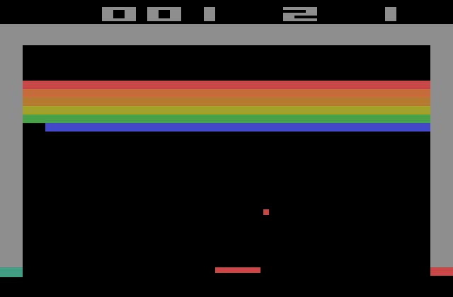
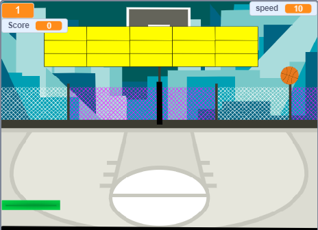

Welcome to recade where we remake old arcade classics and give it a modern touch through scratch with our first game basket breakout. Use link above to go to check code. But here is the game:
Our future plans:
here is 2 side to side images to compare the old breakout for the atari 2600 to our one:
 This game has a story to here it is.
Once in Area 51, workers acceidentaly launched a nuclear missile in space which coincidentally hit a alien ship, the aliens attacked by sending blocks that cause increase tax's and when in a 1 meter radias shall fell as though they forgot something! So the government hier's the nearest basket ball player to get rid of them by throwing a basketball at the bloks.